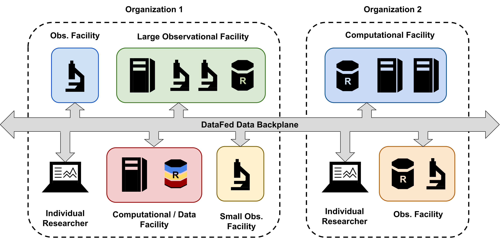

Data Management¶
This page documents for users how to transfer data between the three ASCR Facilities. We also provide guidance on what storage endpoints are available across the ASCR facilities.
Attention
Under construction
Globus¶
ALCF¶
https://www.alcf.anl.gov/support-center/theta/using-globus-theta
https://www.alcf.anl.gov/support-center/cooley/globus-cooley
NERSC¶
You can log into the Globus web interface with your NERSC credentials (by selecting NERSC in the drop down menu of supported identity providers) or using many of the other supported providers listed that you can authenticate against. NERSC maintains several Globus endpoints that can be activated for individual use by any NERSC user. The list of endpoints are provided in the table below.
Endpoint Name |
Description |
Recommended Use |
|---|---|---|
NERSC DTN |
Multi-node, high performance transfer system with access to all NERSC Global File systems (NGF) as well as Cori Scratch |
Almost all data transfers needs into & out of NERSC |
NERSC HPSS |
Single node system connected directly to the NERSC HPSS tape archive |
Remote transfers into & out of HPSS |
NERSC SHARE |
Single node system with read-only access to some NERSC file systems |
Shared Globus endpoint |
NERSC S3 |
Single node system with read-only access to NERSC homes |
Data transfers to & from Amazon S3 |
Data can be shared at NERSC using Globus Sharing. Currently shared endpoints are read-only, no writing is allowed. See this page for more information.
NERSC has an experimental Globus S3 endpoint that can be used to access and share content from AWS S3. See this page for more information.
OLCF¶
OLCF uses Globus for large bulk transfers into and out of the facility. Documentation is available for transfers from personal computing devices as well as endpoints from one facility to another. See this page for more information.
The recommendation to transfer files in and out of OLCF is to begin from the external site, and tar files before executing a transfer between endpoints.
Endpoint Name |
Description |
Recommended Use |
|---|---|---|
OLCF DTN |
Multi-node, high performance transfer system with access to OLCF centewide file system |
Almost all data transfers needs into & out of OLCF |
OLCF HPSS |
Single node system connected directly to the NERSC HPSS tape archive |
Remote transfers into & out of HPSS |
DataFed¶
DataFed is scientific data management and collaboration system that dramatically simplifies tasks such as organizing, searching for, sharing, discovering, and reusing data , especially across facilities and organizations. This is made possible because DataFed “federates” repositories of data into a single, cohesive, and uniform platform. DataFed was designed to enhance productivity and reproducibility in scientific research, keeping the increasingly global and multidisciplinary nature of research involving “big data” in mind. DataFed supports the early lifecycle stages of “working” scientific data and serves as a tool to ease the burden associated with capturing, organizing, and sharing potentially large volumes of heterogeneous scientific data. DataFed provides a FAIR-principled environment in which scientific data can be precisely controlled and refined in preparation for eventual data publishing. DataFed can be accessed via a web portal or via command-line and python application programming interfaces.
See this page for more detailed documentation, YouTube videos, Jupyter notebooks, user guides, API reference etc.
Upon completing the necessary steps to prepare, install and configure DataFed, users can start using DataFed to manage their data:
Command Line Interface¶
Accessing the the CLI in interactive mode:
$ datafed
Welcome to DataFed CLI, version 1.1.0:0
Authenticated as u/user123
Use 'exit' command or Ctrl-C to exit shell.
Creating a Data Record that will contain rich scientific metadata, provenance information, etc.:
root> data create \
--alias "record_from_nersc" \ # Optional argument
--description "Data and metadata created at NERSC" \ # Optional argument
--metadata-file ./nersc_md.json \ # Optional argument
"First record created at NERSC using DataFed CLI" # Title is required though
ID: d/31030353
Alias: record_from_nersc
Title: First record created at NERSC using DataFed CLI
Data Size: 0
Data Repo ID: repo/cades-cnms
Source: (none)
Owner: somnaths
Creator: somnaths
Created: 11/25/2020,08:04
Updated: 11/25/2020,08:04
Description: Data and metadata created at NERSC
Uploading data in the local file system to remote DataFed data repository:
root> data put \
--wait \ # optional - wait until Globus transfer completes
"record_from_nersc" \ # optional - (unique) alias of record
./nersc_data.txt # path to data
Task ID: task/31030394
Type: Data Put
Status: Succeeded
Started: 11/25/2020,08:05
Updated: 11/25/2020,08:05
For more examples, please see the user guide for the DataFed CLI.
Python API¶
Import the package and instantiate the messaging client to communicate with the DataFed server:
from datafed.CommandLib import API
df_api = API()
Prepare (fake) scientific metadata that would go into a Data Record:
parameters = {
'a': 4,
'b': [1, 2, -4, 7.123],
'c': 'Something important',
'd': {'x': 14, 'y': -19} # Can use nested dictionaries
}
Create the Data Record:
dc_resp = df_api.dataCreate('my important data',
metadata=json.dumps(parameters),
parent_id=dest_collection, # parent collection
)
print(dc_resp)
(data {
id: "d/34682319"
title: "Some new title for the data"
alias: "my_first_dataset"
repo_id: "repo/cades-cnms"
size: 0.0
ext_auto: true
ct: 1611077217
ut: 1611077220
owner: "p/trn001"
creator: "u/somnaths"
notes: 0
}
update {
id: "d/34682319"
title: "Some new title for the data"
alias: "my_first_dataset"
owner: "p/trn001"
creator: "u/somnaths"
size: 0.0
notes: 0
deps_avail: true
}
, 'RecordDataReply')
Upload raw data that will be associated with this Data Record:
put_resp = df_api.dataPut(record_id,
'./parameters.json',
wait=True, # Waits until transfer completes.
)
print(put_resp)
(item {
id: "d/34682319"
title: "Some new title for the data"
size: 0.0
owner: "p/trn001"
}
task {
id: "task/34702491"
type: TT_DATA_PUT
status: TS_SUCCEEDED
client: "u/somnaths"
step: 3
steps: 4
msg: "Finished"
ct: 1611102437
ut: 1611102444
source: "olcf#dtn/gpfs/alpine/stf011/scratch/somnaths/DataFed_Tutorial/raw_data.dat"
dest: "d/34682319"
}, 'DataPutReply')
More examples are available in the user guide and in Jupyter notebooks.